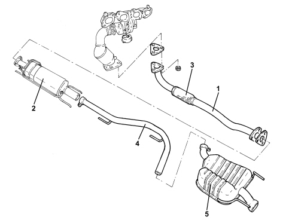

INTRODUCTION - EXHAUST PIPES AND SILENCERS
- Path
- Descriptions > 10 ENGINE > 1076 EXHAUST PIPES AND SILENCERS > INTRODUCTION - EXHAUST PIPES AND SILENCERS
- Kind
- system description
- Applies to
- engines: 1.9 JTD 8V; all production periods
- Interactive page
- https://sloeber94.github.io/elrnDB/#/939003481
Applies to: engines: 1.9 JTD 8V; all production periods
COMPOSITION
The engine exhaust gases flow through the manifold to the turbocharger, to the catalytic converter and via a pipe (1) to the DPF filter (2)
There is a flexible element (3) in the front section of the exhaust pipe to restrict the transmission of vibrations.
The rear section of the exhaust comprises an intermediate pipe (4) and the rear silencer (5).
Special guards prevent heat radiating toward the body and fuel tank.
